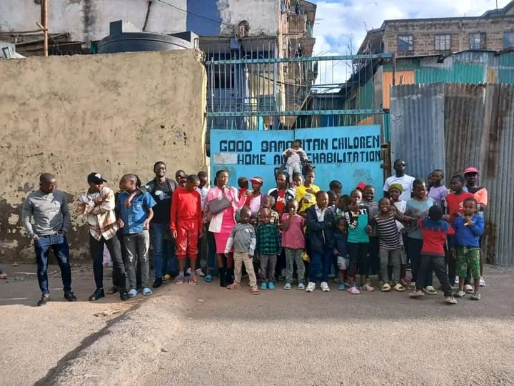
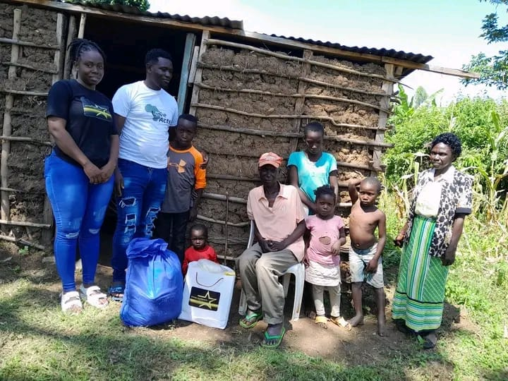
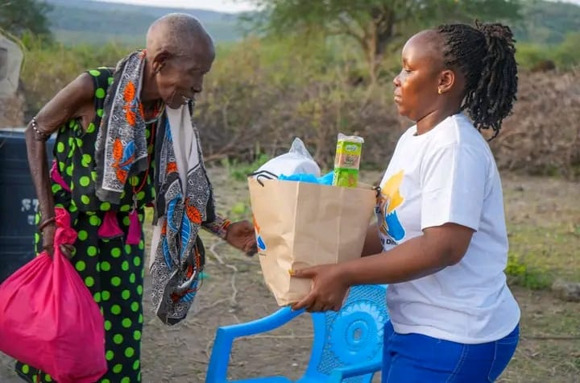

Founder
Ken Okoth Odhiambo

Divine Outreach Charity Organisation
Every life is created with purpose and every child deserves the opportunity to grow, dream, and thrive.

Faith In Action
Through mentorship, prayer, encouragement, and practical support, we help children and families find hope again.

Hope For Communities
We believe true transformation happens when faith meets action and compassion reaches those who need it most.
MISSION STATEMENT
At Divine Outreach, our mission is to create safe and nurturing spaces where vulnerable children can grow in dignity, faith, confidence, and hope. Through mentorship, feeding programs, spiritual guidance, and practical care, we seek to uplift young lives, strengthen families, and reflect the love of Christ in our communities.
At Divine Outreach Charity Organisation, we believe that every life is created with purpose and every child deserves the opportunity to grow, dream, and thrive. Rooted in Christian values of love, compassion, and service, Divine Outreach exists to be a vessel through which hope, mentorship, and practical support reach the most vulnerable members of our communities.
Founded in 2022 by Kennedy Okoth and Faith Maero, Divine Outreach was born from a shared calling to serve and uplift those who often feel forgotten. Inspired by the biblical call to serve others and care for the less fortunate, the organisation focuses on transforming lives through mentorship, encouragement, and community outreach.
Our vision is to establish a nurturing community where vulnerable children and families in Kenya can thrive through holistic care, quality education, spiritual guidance, and empowerment, creating a legacy of hope, faith, and sustainable impact in our communities.
Ken Okoth Odhiambo
Faith Maero
Founded in 2022 by Kennedy Okoth and Faith Maero, Divine Outreach was born from a shared calling to serve and uplift those who often feel forgotten. Witnessing the struggles faced by children in vulnerable environments, especially those in children’s homes, moved the founders to create an organisation that would not only provide support but also restore dignity, confidence, and hope.
Through mentorship programs and outreach initiatives, Divine Outreach helps young people discover their God-given potential and develop the confidence to pursue a brighter future. What makes Divine Outreach unique is its belief that true transformation happens when faith meets action.
Today, Divine Outreach continues to impact lives by creating safe spaces where children can grow, learn, and be inspired. With every mentorship session, outreach program, and act of kindness, the organisation strives to raise a generation that is confident, compassionate, and guided by faith.
“When faith moves us to serve, hope is restored, lives are uplifted,
and God’s love becomes visible in the world.”
Faith Maero, Co-founder of Divine Outreach
Founder – Love Acts 4 Africa
At Divine Outreach Charity Organisation, we proudly collaborate with partners whose vision and commitment echo the heart of Christ. We are honored to work alongside Love Acts 4 Africa, whose purpose is to serve the vulnerable, uplift the marginalized, and demonstrate God’s love through action.
Through this divine partnership, we strengthen our outreach, deepen our impact, and shine the light of God’s love into communities, reminding all that through unity in service, lives are transformed.
"At Divine Outreach, we believe every act of love reflects the heart of Christ and every life touched is a step toward transforming communities.”
Since our establishment in 2022, Divine Outreach has been actively reaching out to children and families facing difficult circumstances through compassion, mentorship, and practical support.
Each December, Divine Outreach organizes a special outreach initiative where we provide meals, encouragement, and mentorship to vulnerable children and families.
Beyond providing meals, we take time to engage, pray, and mentor young people who may feel forgotten by society, reminding them they are seen, loved, and valued.
Through monthly mentorship sessions, we help young people build self-confidence, leadership skills, faith, and positive life values in a safe and encouraging environment.
Through our partnership with Love Acts 4 Africa, we combine resources, share vision, and extend the impact of our programs to touch even more lives.
Families Reached
Slum Children Reached with Mentorship Program
Counties reached with feeding programme(Nairobi,Kakamega,Nandi,Kajiado)
Street Children Fed & Mentored
Children Homes Visited
HOW TO GET INVOLVED
Help us spread the message of hope by telling others about Divine Outreach. You can invite friends, share our work online, and encourage more people to stand with vulnerable children and families in our communities.
Learn More ›You can make a direct difference by supporting our mentorship sessions, feeding outreaches, and student care initiatives. Every contribution helps us provide encouragement, practical support, and lasting hope.
Learn More ›Join us in serving during outreach events, mentorship gatherings, and community support activities. Whether you give your time, skills, prayer, or encouragement, your presence can help change lives in meaningful ways.
Learn More ›FROM DIVINE OUTREACH
Through our community outreach programs, Divine Outreach continues to support vulnerable children and families with mentorship, encouragement, practical care, and the love of Christ.
Our monthly mentorship sessions are helping young people grow in self-worth, leadership, faith, and hope as they discover their God-given potential for the future.

Divine Outreach visited Good Samaritan Children’s Home to spend time with the children through mentorship, fellowship, and shared meals. The visit was a moment of encouragement, reminding them they are loved, valued, and full of hope for the future.

During our outreach in Mumias, Western Kenya, Divine Outreach spent time encouraging children and families through mentorship, fellowship, and sharing meals together, reminding them that they are valued and loved.

In Mathare, Nairobi, our team continues to serve vulnerable children and families through street feeding programs, mentorship conversations, and prayer sessions that restore hope and strengthen community bonds.

In Esonorua, Nairobi, our team continues to serve vulnerable children and families through street feeding programs, mentorship conversations, and prayer sessions that restore hope and strengthen community bonds.
Through partnership and faithful support, Divine Outreach has been able to sponsor three dedicated high school students — Job, Melvin, and Washington — with school fees, uniforms, books, meals, and ongoing care.
Your contribution helps sustain mentorship programmes, supports vulnerable children, and extends hope to more families facing hardship.
Become a Supporter